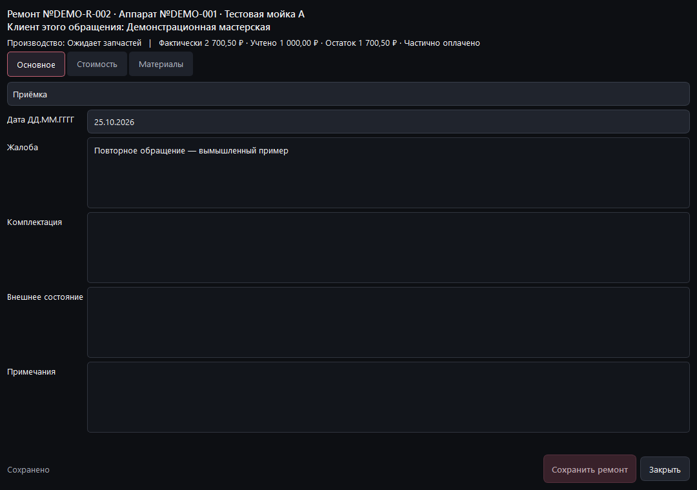

SERVICE / РАБОЧИЙ КОНТУР МАСТЕРСКОЙ
Каждый аппарат.
Вся история.
Приёмка, работы, расчёты и документы связаны с конкретным обращением. Повторный ремонт продолжает историю аппарата, а не перезаписывает её.
Core + Service alpha бесплатны по условиям программы. Перейти к загрузке для Windows →
Alpha 0.3.0a6 не входит в публичный Release v0.1.1. Новый интерфейс подготовлен для приёмки; промышленное внедрение не заявляется.
- 01АппаратПостоянный номер оборудованияОБЪЕКТ
- 02ОбращениеРаботы, сметы и ручные отметкиРЕМОНТ
- 03История и документыКаждое обращение сохраняется отдельноСВЯЗИ
SERVICE / ПУТЬ ОБРАЩЕНИЯ
От первого осмотра
до следующего ремонта.
- ПриёмкаАппарат, заказчик и жалоба
- ДефектовкаНеисправности и план
- РасчётВерсии смет и ручные отметки
- ВыполнениеРаботы, детали и материалы
- ДокументыВерсии DOCX и история выдачи
Это состав работы, а не обязательная последовательность статусов. Дефектовка, ожидание и согласование могут повторяться; переходы фиксируются оператором.
НАСТОЯЩИЙ ИНТЕРФЕЙС / НОВАЯ ALPHA
Мастерская на одном экране.
Фактические обращения, отдельная очередь и быстрый переход к истории аппарата.

ОТ ОБЗОРА — К ДЕТАЛЯМ
Одна карточка
для одного обращения.
Паспорт ремонта, отдельные суммы и группы разделов помогают перейти от факта к документу.

Аппарат остаётся тем же.
Номер оборудования и номер обращения различаются. Клиент конкретного ремонта сохраняется в истории.
Черновик и версия различаются.
Предварительные и окончательные расчёты отделены от фактической стоимости. Согласование отмечается вручную.
Копия проверяется восстановлением.
База и связанные файлы восстанавливаются в новую папку. Действующий проект не заменяется.
АДАПТАЦИЯ ПОД ПРЕДПРИЯТИЕ
Сначала схема работы.
Затем настройка.
Нужны обезличенный журнал, правила номеров и утверждённые формы. Мы согласуем объём переноса и приёмочные примеры, затем определим стоимость и срок.
Обсудить Service ↗Локальный проект.
Один оператор.
Без сервера, облачной синхронизации, банка, кассы и официальной интеграции 1С. Нельзя использовать одну SQLite-базу как общий сетевой журнал.
ПЕРЕД НАЧАЛОМ
Вопросы
по существу.
Чем отличаются Core и Service?
Core создаёт комплекты DOCX из таблицы. Service ведёт историю оборудования и обращений, сметы и документы. Направления доступны в одном приложении новой alpha.
Как устроены расчёты?
Черновик предварительной и окончательной сметы отделён от фактических позиций. Сохранённые версии неизменяемы, согласование отмечается вручную. Внутренний учёт оплаты не проводит деньги.
Куда отправляются мои файлы?
Приложение обрабатывает файлы локально, без аккаунта и телеметрии. Результаты и копии не зашифрованы; доступ к папкам контролируете вы.
Что входит в настройку?
Перечень шаблонов, исходная таблица, правила полей и приёмочные примеры фиксируются до начала работ. Новые функции и интеграции согласуются отдельно.
Можно работать вместе с коллегами?
Текущая Service рассчитана на одного оператора и локальный проект. Совместная работа, серверная синхронизация и интеграции с банком или 1С не реализованы.
Можно отправить заявку с сайта?
Форма выключена. Начните с описания задачи в Telegram или email, без реальных данных клиентов. Объём, цена, сроки и сведения исполнителя согласуются отдельно.
ПЕРЕЙДЁМ К ВАШЕЙ ЗАДАЧЕ
Начнём с процесса,
который вы хотите упростить.
Согласуем объём, входные материалы и ожидаемый результат до начала настройки.
Ссылки открывают внешний сервис. Сообщение отправляете вы сами. Сайт не принимает оплату и не отправляет заявку.
Достаточно описания процесса.
Какие документы нужны? Где сейчас ведёте данные? Сколько сотрудников будут работать? Реальные базы и клиентские сведения пока не присылайте.